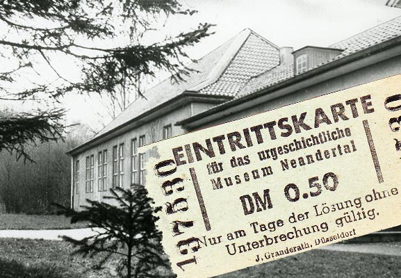
Das Neanderthal Museum hat eine mehr als 75jährige Geschichte
Um mehr darüber zu erfahren, wischen Sie einfach von rechts nach links
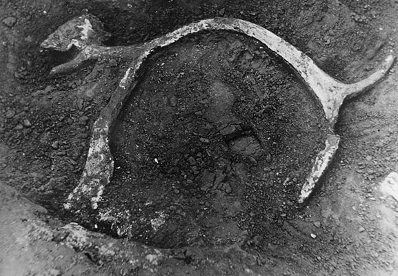
1927-1929
Ausgrabungen im Neanderthal
Der 1920 gegründete Naturschutzverein Neandertal e.V. finanziert Ausgrabungen im Neandertal
unter der Leitung von Dr. Richard Rein und Horst Sieloff vom Museum Löbbeke in Düsseldorf. Die
Funde, Steinwerkzeuge und Überreste eiszeitlicher Tiere wie Rentier und Mammut, gehen in den
Besitz des Vereins über. Ab 1927 werden die Funde im Dachgeschoss des Mettmanner Rathauses präsentiert.
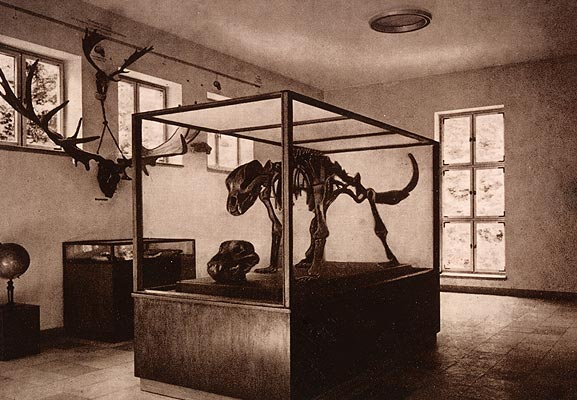
1937
Das erste Museum im Neandertal
Das ehemalige Pumpenhaus der Hochdahler Hütte wird durch einen Hallenbau ergänzt und zum Museum ausgebaut,
das am 1. Mai 1937 eröffnet wird. Dr. Richard Rein entwickelt ein Ausstellungskonzept und wird nebenamtlicher
Museumsleiter. Die Ausstellung im neuen Museum wartet u.a. mit zwei elektrisch betriebenen Modellen auf.
Die Ausstellungsinhalte entsprechen jedoch nicht der nationalsozialistischen Ideologie. Daher muss das Museum
kurz nach seiner Eröffnung auf politischen Druck hin wieder schließen.
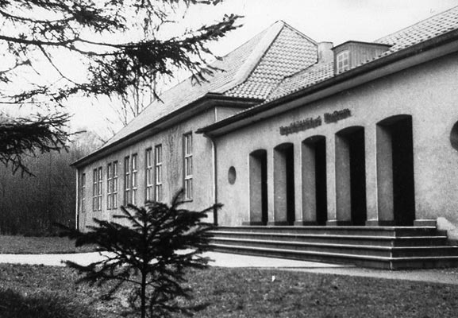
1938
Wiedereröffnung des Urgeschichtlichen Museums
Nach der Umgestaltung unter Beteiligung des Reichsleiters für Vorgeschichte Hans Reinerth wird das Museum
als „Urgeschichtliches Museum“ wieder eröffnet. Die Ausstellung konzentriert sich nun auf den Neanderthaler
und ihr Rundgang endet mit der „rassengeschichtlichen“ Entwicklung des deutschen Volkes. Der große Erfolg des
Museums lässt bald nach der Eröffnung den Ruf nach seiner Erweiterung laut werden. Mit Ausbruch des Zweiten
Weltkriegs kommt das Vorhaben zum Erliegen. Dennoch werden der Besuch von Museum und Wildgehege durch die NSDAP
propagiert. Während des Zweiten Weltkriegs bleibt das Museum bis in die 1940er Jahre für die Öffentlichkeit
zugänglich.
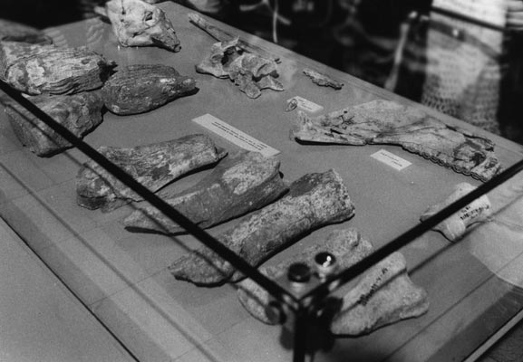
1947
Erste Schritte nach dem Krieg
Nach Kriegsende wird das Museum am 10. Mai 1947 zügig wiedereröffnet. Da viele Exponate in den Kriegswirren verschwunden sind,
vereinbaren der Naturschutzverein und das im Krieg zerstörte Museum Löbbecke aus Düsseldorf eine Kooperation. Dieses
stellt Exponate für die Ausstellung zur Verfügung und im Gegenzug erhält es die Einnahmen aus den Eintrittsgeldern.
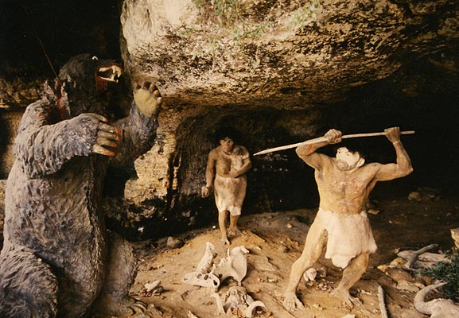
1951-1952
Umstrukturierung und Wiedereröffnung
Unter dem Eindruck der 1956 bevorstehenden 100-Jahrfeier der Entdeckung des Neanderthalers beschließt die Mitgliederversammlung
des Naturschutzvereins Hans Große, Leiter des Heimatmuseums Hilden, und den gerade in Bonn promovierten Dr. Karl-Josef Narr mit der
Entwicklung eines neuen Museumskonzeptes zu betrauen. Am 20.03.1951 wird das Museum wiedereröffnet. Leihgaben von Originalen aus
anderen Sammlungen stehen wegen der mangelnden technischen Ausrüstung des Hauses nicht zur Verfügung. Neben Knochenfunden eiszeitlicher
Tiere aus dem Tal selbst werden Schädelabgüsse, Tierplastiken Höhlenzeichnungen und Bilder der eiszeitlichen Großsäuger gezeigt. Schon
kurz nach der Wiedereröffnung werden aufgrund rückläufiger Besucherzahlen und angesichts des bevorstehenden Jubiläums Überlegungen angestellt,
das Museum zu erweitern.
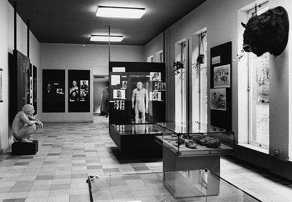
1960-1962
Umgestaltung des Museums
Seit Ende der 1950er Jahre werden Pläne für eine bauliche Erweiterung des Museums und eine Neuorientierung der Ausstellung entwickelt. Das
unter Prof. Dr. Hermann Schwabedissen neu gegründete Institut für Ur- und Frühgeschichte der Universität Köln erklärt sich zur Mitarbeit bereit.
Schwabedissen verfolgt ein ganzheitliches Ausstellungskonzept, das den eiszeitlichen Menschen im Rahmen der Klima- und Umweltgeschichte präsentiert.
Er beauftragt Gerhard Bosinski mit der Umsetzung des Konzeptes. Zur Wiedereröffnung des Museums am 22.6.1962 sind auch bauliche Maßnahmen erfolgt,
so wurden Fenster, Decken, Heizung und Beleuchtung erneuert. Die Ausstellungsfläche bleibt mit 300 qm² unverändert. Zur neuen Ausstellung gehört
auch die erste wissenschaftliche Rekonstruktion des Original-Neanderthalers von Dr. Gerhard Wandel.
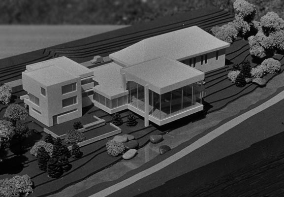
1970-1977
Architektonische Entwürfe für einen Neubau
Auf der Mitgliederversammlung des Naturschutzvereins wird am 23.10.1973 eine Zusammenarbeit des Neandertalmuseums mit dem Museumsamt und dem
Rheinischen Landesmuseum vorgeschlagen. Das Neandertalmuseum soll als gemeinsame Außenstelle betrieben werden. Der Architekt Walter Arns entwirft
darauf hin für den Standort des Museums ein neues architektonisches Konzept. Das alte Museumsgebäude wird zum Magazin und soll eine Präparationswerkstatt
beherbergen. In einem Neubau sollen Dauer- und Sonderausstellungen sowie eine Forschungsabteilung untergebracht werden.
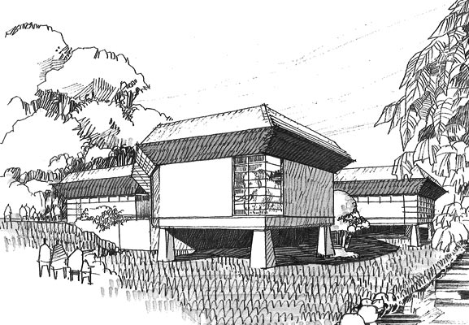
1978
Ausstellungskonzeption
Die Dauerausstellung in dem geplanten neuen Museumsbau soll nun die Menschheitsgeschichte in ihrer Gesamtheit präsentieren mit einem Schwerpunkt
auf der Eiszeit und dem Neanderthaler. Die Vorstellungen von Hermann Schwabedissen sehen eine Verzahnung von Museum und Forschung vor. Aus dem
Heimatmuseum soll ein internationales Forschungsmuseum werden. Der Neubau ist in greifbarer Nähe.
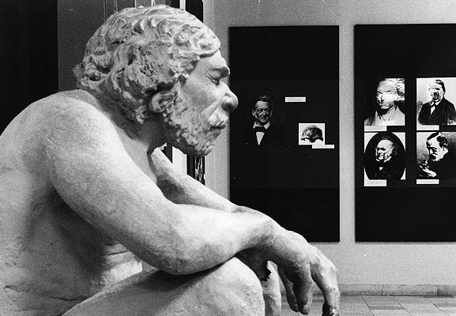
1979-1981
Dringlichkeit des Vorhabens
Die öffentliche Kritik am Zustand des Museums wird immer lauter. Besucher und Presse greifen das negative Bild immer wieder auf. Die Rheinische
Post spricht von einem „Bild des Jammers“ und einem Museum, das allem Grund habe, sich wegzuducken – schließlich sei es zu einer traurigen
Knochensammlung „dahingewelkt“. Im Juni 1981 wird die umgebaute Ausstellung unter der Leitung von Prof. Dr. Gerhard Bosinski wiedereröffnet. Die
Rekonstruktion des Neanderthalers, der nackt aber ohne Geschlechtsteil gezeigt wird, sorgt bei diesem Anlass für Spott. Klaus Beckmann leitet das
Museum bis 1996 und unternimmt kleine Aktualisierungen mit unzureichenden finanziellen Mitteln.
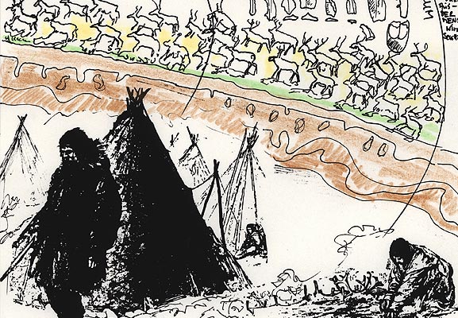
1986-1987
Endspurt zum neuen Museum
Unter dem neuen Vorsitzenden des 1982 ins Leben gerufene Förderverein, Prof. Dr. Dres. H. c. Gert Kaiser wird Prof. Dr. Winfried Henke mit
Planungen zu einem neuen Ausstellungskonzept beauftragt. Das transdisziplinäre Konzept steht unter dem Motto: „Woher kommen wir? Wer sind wir?
Wohin gehen wir?“ Im Jahr 1986 wird Ministerpräsident Johannes Rau Mitglied im Förderverein. Im Jahr darauf erklärt die NRW-Stiftung Naturschutz,
Heimat und Kulturpflege, den Neubau des Museums mit 12 Mio. DM zu unterstützen. Die Stadt Mettmann erwirbt das Grundstück des Neanderhofes und
stellt es als neuen Museumsstandort zur Verfügung. Der Förderverein beauftragt neben Prof. Dr. Winfried Henke den Direktor des Naturkunde Museums
Münster, Prof. Dr. Ludwig Franzisket, ein Raum- und Ausstellungskonzept zu konkretisieren.
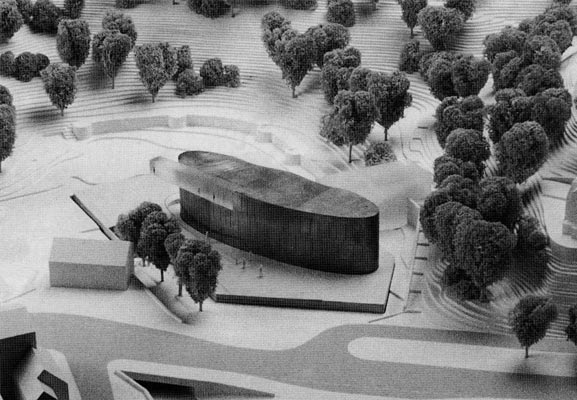
1993-1994
Architekturwettbewerb und Planungsgruppe
Die Stiftung Neanderthal Museum lobt einen Wettbewerb für das neue Museum aus, an dem 136 Büros teilnehmen. Die Stiftung beauftragt die Gewinner
des 1. und 2. Preises mit einer Überplanung ihrer Wettbewerbsentwürfe und beauftragt schließlich Günter Zamp Kelp, Julius Krauss und Arno Brandlhuber
aus Düsseldorf mit der Planung des neuen Museums. Die Stiftung Neanderthal Museum beruft den Urgeschichtler Prof. Dr. Gerd-Christian Weniger zum
wissenschaftlichen Leiter der Planungsgruppe. Er steht einem Team externer Experten aus Wissenschaft, Museumskunde, Medien und Marketing vor, das als
„Think Tank“ das Museumskonzept weiterentwickelt. Ab 1995 wird er von Dr. Bärbel Auffermann als Volontärin unterstützt. Die französischen Ausstellungsgestalter
CREAMUSE erhalten schließlich den Auftrag, die Ausstellung zu realisieren.
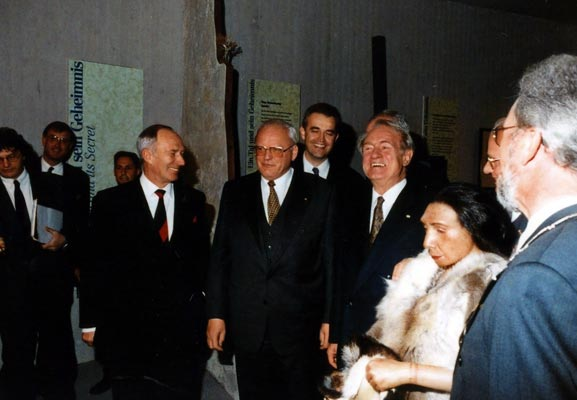
1996
Eröffnung des neuen Neanderthal Museums
Im Beisein des Bundespräsidenten Roman Herzog und des Ministerpräsidenten von NRW, Johannes Rau wird das neue Neanderthal Museum nach einer Bauzeit von 12
Monaten und einer Planungs- und Bauzeit von 24 Monaten für die Dauerausstellung eröffnet. Das neue Museum wird sofort zu einem Besuchermagneten und hat in den
ersten 12 Monaten 240.000 Besucher.
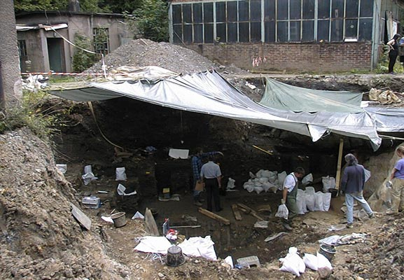
1998
Ankauf der Fundstelle
Mit Unterstützung der NRW Stiftung erwirbt die Stiftung Neanderthal Museum von der Rheinisch-Westfälischen Kalkwerke AG, das Gelände des Frauenhofer Steinbruchs,
auf dem sich auch das Areal des ehemaligen Fundortes befindet. Bei Sondagen im Jahr zuvor, hat das Rheinische Amt für Bodendenkmalpflege Reste der Sedimentfüllung
der kleinen Feldhofer Grotte entdecken können. Ausgrabungen im Jahr 1997 und 2000 erlauben es, die Lage der zerstörten Feldhofer Grotte zu lokalisieren.
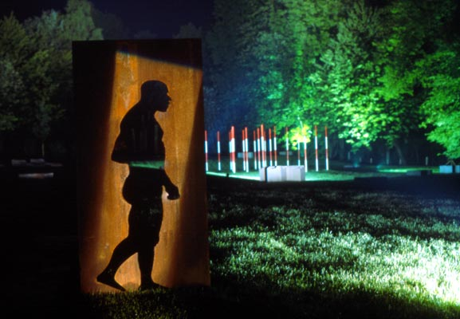
2002
Fundstelle, Steinzeitwerkstatt & Skulpturenpfad
Für die Gestaltung des Fundortes des Neanderthalers wird im Rahmen der Regionalen des Landes NRW ein internationaler Wettbewerb für Landschaftsarchitekten
ausgelobt. Das Büro Lützow 7 gewinnt den Wettbewerb. Aus der Industriebranche werden ein archäologischer Park und der Fundort erstmals für die Öffentlichkeit
zugänglich. Das alte Museumsgebäude wird renoviert und zu einem didaktischen Zentrum ausgebaut. Im Obergeschoss wird die wissenschaftliche Abteilung des Museums
eingerichtet. Entlang der Düssel entsteht der Skulpturenpfad „MenschenSpuren“. Zehn Künstler von internationalem Renommee setzen sich in ihren Arbeiten mit dem
Konflikt Mensch – Natur auseinander.
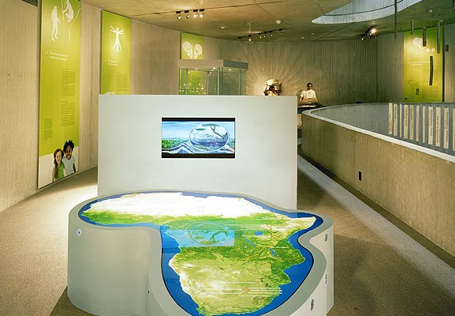
2006
Eröffnung der neugestalteten Dauerausstellung
Zum 150jährigen Jubiläum der Entdeckung des Neanderthalers wird die Dauerausstellung des Museums im laufenden Betrieb umfassend überarbeitet.
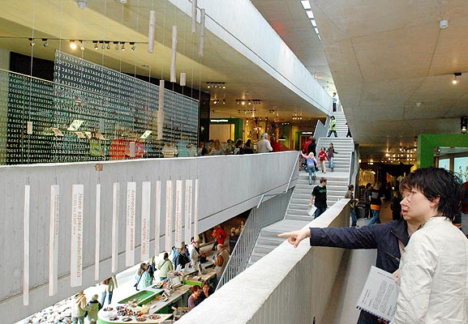
Heute
Die Geschichte geht weiter
Das Neanderthal Museum entstand an dem Ort, der ein wichtiges Kapitel europäischer Kulturgeschichte geschrieben hat. Seit seiner Eröffnung 1996 haben mehr
als 3 Millionen Menschen das Neanderthal Museum besucht und mehr über die weltgeschichtliche Bedeutung des Neanderthalers erfahren. Jährlich werden im Bereich
Führung und Didaktik weit über 3.000 Veranstaltungen durchgeführt. Neben den über 150.000 Besuchern der Dauer- und Sonderausstellungen kommen so bis zu 25.000
Menschen jährlich in die Steinzeitwerkstatt. Das Neanderthal Museum gehört heute zu den wenigen Museen in Deutschland, denen es gelingt, sich vor allem aus
Eintrittsgeldern und eingeworbenen Drittmitteln zu finanzieren.
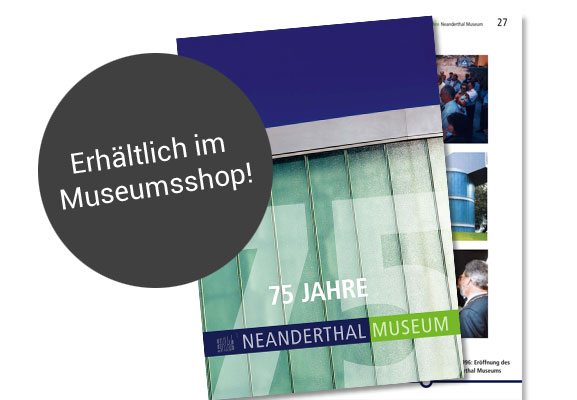
Wenn Sie mehr erfahren möchten...
75 Jahre Neanderthal Museum
Die Veröffentlichung zum 75jährigen Jubiläum des Neanderthal Museums erhalten Sie in unserem Museumsshop. Sie finden darin auch eine ausführliche Chronik der
Museumsgeschichte sowie allerlei Spannendes und Kurioses aus über sieben Jahrzehnten Neanderthal Museum.